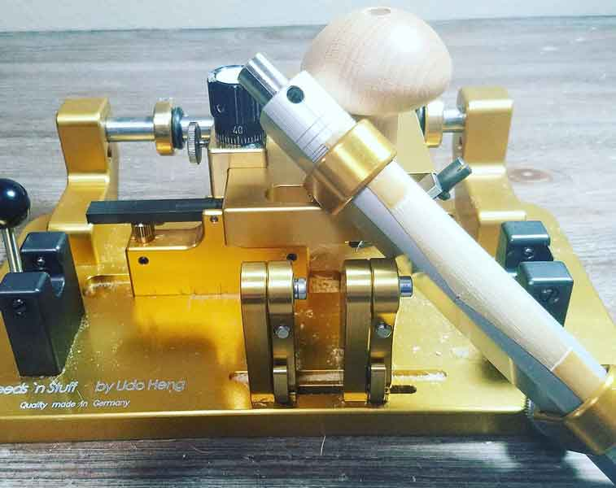

Arundo Donax (reed cane) comes in the form of various sized tubes. First, I sort for tubes that have a diameter between 24 and 26 millimeters and discard the rest. Then, I split the tubes into four equal parts using a small cleaver, and trim each piece down to 120 millimeters in length using a cane guillotine. I then allow the cane to soak in water overnight.
Gouging
Pre-gouging Cane
Gouged Cane
Drying Cane
Testing Hardness
Once the cane has been thoroughly soaked, I run it through my pre-gouging machine. This machine removes most of the pithy material from the inside of the cane, thus saving the blade of my gouging machine. I then gouge the cane with my gouging machine, which removes a finer amount of pithy material and leaves the inside of the cane smooth.
I check the curls of cane that come off the gouging machine and discard any pieces that produce rough or pock-marked curls. I gouge each piece to a thickness of at most 1.39 millimeters (and not thinner than 1.2 millimeters). A thinner gouge produces generally harder cane and a thicker gouge produces generally softer cane. I discard any pieces of gouged cane that are warped. I then set the cane to dry bark-side up for at least 4 days.
After drying, I discard any pieces that have curled into tight semi-circles. Flatter pieces produce more desirable tip-openings on finished reeds. I then test the hardness of each piece with my hardness tester. On a hardness tester higher numbers indicate softer pieces of cane, while lower numbers indicate harder pieces. Every hardness tester is different and individual tastes vary, but I prefer working with cane that registers on my machine as 19 or less. Pieces that register higher than this I gouge thinner, set aside to age for a few years if the piece is too thin to gouge again, or discard if the pieces is too thin to gouge and registers higher than 21. The reason I set aside some pieces to age is that cane will harden slowly over time.
Shaping, Profiling, and Forming Reed Blanks
Shaped Cane

Profiled Cane
Drying Blanks
I soak the cane once again overnight before placing it in my straight shaper and shaving off the excess cane with an x-acto knife. I then place the cane onto my profiler machine and profile it to a thickness of .9 millimeters near the tube, .6 millimeters at 12.7 millimeters from the fold, and .5 millimeters at the fold. I leave the profile intentionally thick at the fold because I typically use a tip profiler to create a tip for my reeds. It is certainly possible to create a tip by hand and I recommend a thickness of .35 millimeters at the fold if that is your intention.
A profiler machine thins the piece of cane by removing material from the bark side (opposite of a gouger which removes material from the inside). I then score lines into the bark tube of the profiled cane using a tap from a tap and die set, a razor blade works just as well. I only score all the way through the bark from about 3-4 millimeters above the butt. I then fold the piece of cane in half and wrap a piece of brass wire around the tube about 25.4 millimeters from the butt of the reed.
I make sure the wire is wrapped snugly around the tube with pliers. I wrap the reed with wet twine starting about halfway up the blade above the wire. I wrap the twine rather tightly above the wire and then loosely below the wire all the way down the tube and back up. I tie a half-hitch to keep the twine from unraveling.
I then insert my forming mandrel into the tube of the reed and push the reed as far onto the mandrel as it will go. I then round the tube aroud the mandrel with my pliers. Once the tube as been adequately rounded, I remove the reed from the mandrel and place it on the drying rack to dry for at least 24 hours. Letting the reed dry for 2 weeks or longer is preferrable.
Wrapping Blanks
Wrapped Blank
Colorful Blanks
After the reed has dried, I unwrap the twine and remove the wire. I then bevel the reed by rubbing the tube close to butt on a flat rectungular diamond file or a piece of sand paper. The idea is to flatten the edges of the tube so that the two halves will sit flush against each other and form a circle. I then put the reed on my mandrel and reapply the first wire at 25.4 millimeters. I put the third wire about 5 millimeter above the butt, and the second wire 8 millimeters below the first wire. I then wrap the reed.
There are multiple methods for wrapping reeds. I have used both thread and hot glue. I recommend using hot glue because it is quicker and easier. If using thread and Duco cement, let the reeds dry overnight after applying the Duco.
Clipping the Tip and Finishing the Reed
A 'Tipped' Reed
Finishing a Reed
Once the wrapping has dried, I soak the reed in water fo 5 to 10 minutes. I then clip the tip of the reed 28 millimeters from the top of the first wire. I then profile the tip of the reed on my tip profiler machine. I profile to a thickness of .25mm in the center of the edge of the tip. At this point the reed is ready to be played in and adjusted over a period of several days. It may take up to a couple of weeks of small daily adjustments before the reed is ready to be played in rehearsal or performance settings.
Purchase Reeds or Setup a Reedmaking Lesson
If you are interested in purchasing professional, hand-made bassoon reeds or setting up a reedmaking lesson contact me at HarterBassoon@gmail.com